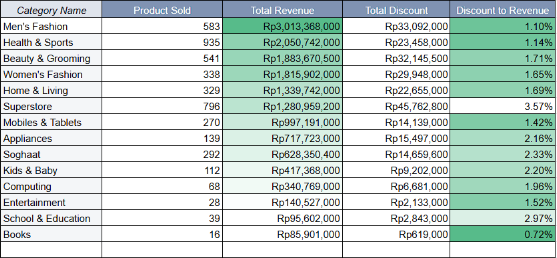
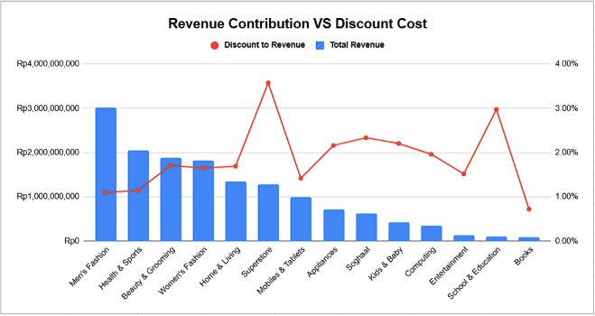
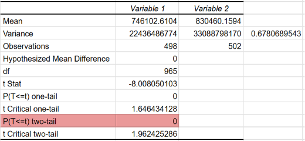

Tokobli E-Commerce
Campaign performance analysis, discount efficiency, and A/B testing across three Twin Date campaigns.
Top Campaign
12/12
Highest efficiency score (59)
Highest Revenue
Rp16.6B
11/11 campaign
Most Transactions
3,410
12/12 campaign
A/B Test Result
p < 0.05
New UI significantly increases spending
Project Summary
- Clean the dataset using spreadsheet functions, specifically the filter and sort functions.
- Perform basic statistical analysis such as statistical description and data distribution analysis.
- Conduct EDA (Exploratory Data Analysis) processes such as univariate and multivariate analysis to gain valuable insights.
- Create data visualizations.
- Conduct hypothesis testing using A/B testing.
Insights
Campaign Performance
- The highest number of transactions occurred during the 12/12 campaign.
- The 12/12 campaign recorded the highest total number of items sold.
- The highest total discount cost was incurred during the 11/11 campaign.
- The 11/11 campaign attracted the highest number of customers.
- The highest total revenue was generated during the 11/11 campaign.
- The 12/12 campaign had the highest discount ratio.
Descriptive Statistics (Quantity, Discount, and Total Revenue)
- Quantity: The maximum purchase quantity in a single transaction is 30 units, while the minimum is 1 unit. The average purchase quantity is 1 unit per transaction, with a median of 1.
- Discount: The maximum discount value is Rp900,000, and the minimum is Rp0. The average discount is Rp81,935, with a median of Rp0.
- Total Revenue: The maximum total revenue is Rp13,940,000, and the minimum is Rp45,000. The average total revenue is Rp4,563,207, with a median of Rp4,275,000.
Hypothesis Testing Results
- Since the p-value is < 0.05, the alternative hypothesis (H1) is accepted, and the null hypothesis (H0) is rejected.
Additional Resources
For a more comprehensive analysis and visualization, please open the project files.
Project Background, Objective, and Methodology
Project Background
Tokobli is an e-commerce platform offering a diverse range of product categories. The platform leverages "Twin Date" campaign strategies to drive customer engagement and interaction. Recently, Tokobli introduced a new "Buy Now" button alongside a redesigned user interface on their platform. In this project, I will analyze the strategies applied across various campaigns to evaluate their respective performances. Furthermore, I will conduct A/B testing to determine whether the newly implemented features have a statistically significant impact on increasing user spending.
Objective
To identify the campaigns that generate the highest total revenue and transaction volume, in order to optimize campaign strategies for future periods.
Methodology
- Problem Understanding: Comprehending the core problems to be addressed and the objectives to be achieved.
- Dataset Overview: Understanding each data column variable based on the provided data dictionary.
- Data Preparation: Handling duplicate records, missing values, and formatting errors.
- Data Analysis (EDA): Analyzing the data utilizing descriptive analysis methods.
- Data Visualization: Creating charts and graphs from the analyzed data to facilitate the communication of insights.
- Recommendations: Providing actionable recommendations derived from the analysis results.
Result
1. Descriptive Statistics Analysis


- Quantity
During the campaign period, the purchase quantity ranged from 1 to 30 items per transaction. The mean, median, and mode were all exactly 1, indicating that the vast majority of customers purchased only a single item per transaction. - Discount
Discounts applied during the campaign ranged from Rp0 to a maximum of Rp900,000, with an average of Rp81,935 per transaction. However, both the median and mode were Rp0, indicating that over 50% of the transactions did not utilize any discount at all. - Total Revenue
Transaction revenue during the campaign ranged from a minimum of Rp45,000 to a maximum of Rp13,940,000. The average revenue per transaction was Rp4,563,207 with a median of Rp4,275,000, which means that half of the transactions generated revenue above this median figure. Additionally, the most frequent transaction value (mode) was Rp7,200,000.
2. Campaign Performance Analysis
Total Transaction by Campaign

Throughout the period, customers transacted most frequently during the 12/12 campaign. The pie chart highlights this peak, showing that the 12/12 event led the period with a total of 3,410 transactions.
Total Customer by Campaign

The 11/11 campaign attracted the highest number of customers among all campaigns, totaling 1,567. In contrast, the 12/12 campaign recorded the lowest customer count with 1,447.
Total Product Sold by Campaign

The product sold the most units during the 12/12 campaign, with 4,486 units sold. The least units sold occurred during the 11/11 campaign, with 4,115 units sold.
Total Revenue by Campaign

The highest revenue occurred during the 11/11 campaign, amounting to Rp 16,622,135,800. The lowest revenue occurred during the 12/12 campaign, amounting to Rp 14,807,815,100.
Total Discount by Campaign

The largest cumulative discount occurred during the 11/11 campaign period, amounting to Rp 302,636,200. The smallest cumulative discount occurred during the 12/12 campaign period, amounting to Rp 252,834,900.
Discount Efficiency Ratio by Campaign


- Campaign 11/11 (The Revenue Champion): This campaign generated the highest Total Revenue (Rp16.6 Billion) and attracted the largest customer base. However, its discount efficiency ranked second with a ratio of 55.
- Campaign 12/12 (The Efficiency & Volume Champion): Although its total revenue did not surpass the 11/11 campaign, it was the most budget-efficient (ratio of 59) and successfully recorded the highest number of transactions and items sold.
3. Product Category Performance Analysis
Product Category Performance in the 10/10 Campaign


Top-Performing Categories
- Men's Fashion: This category served as the backbone of the campaign, generating the highest revenue of Rp3,381,140,000. It demonstrated highly optimal efficiency, with a discount expense ratio of only 1.00%.
- Beauty & Grooming: Secured the second position with a revenue of Rp2,942,085,500 and successfully recorded the highest product sales volume at 823 units.
Underperforming Categories (Areas of Budget Leakage)
- Superstore: This category was the primary source of inefficiency, holding the highest discount expense ratio at 3.85%. The chart reveals a sharp spike in its percentage line, which contrasts sharply with its mid-tier revenue contribution (Rp1,126,062,000).
- Appliances: Displayed a similarly wasteful trend with a discount expense ratio of 3.12%. This high proportion of discount expenditure is particularly burdensome as the resulting revenue was notably low (Rp556,784,000).
Conclusion on Efficiency Decline
The excessive discount expenditures in the Superstore and Appliances categories failed to convert into proportional revenue. The budget leakage from these two problematic categories created a heavy financial burden, which even the outstanding performance of Men's Fashion could not fully offset. This dynamic ultimately dragged down the overall average performance, resulting in the 10/10 Campaign having the lowest discount efficiency rate.
Product Category Performance in the 11/11 Campaign


Top-Performing Categories
- Men's Fashion: This category absolutely dominated and served as the primary backbone of the campaign, generating a massive revenue of Rp8,246,126,000 with the highest sales volume (1,431 units). Interestingly, this category operated at peak efficiency, successfully suppressing its discount expense ratio to the lowest point of 0.72%.
Underperforming Categories (Areas of Budget Leakage)
- Kids & Baby: This category was the most severe source of inefficiency. Its discount expense ratio skyrocketed to 5.30% (the highest peak on the red line chart). Ironically, this substantial sacrifice in margin only yielded a minimal revenue of Rp388,691,000.
- Appliances: Continuing the wasteful trend from the previous campaign, this category consumed a discount expense ratio of 4.12%. This high cost proportion once again failed to convert into commensurate sales, with revenue stalling at Rp701,922,000.
- Superstore: Although it secured its position as the second-largest revenue contributor, its discount ratio remained relatively high at 2.98%, acting as a structural burden that continued to erode the company's profit margins.
Conclusion on Efficiency Constraints
The severe explosion of budget inefficiency within the Kids & Baby and Appliances categories severely drained the promotional budget without delivering a meaningful Return on Investment (ROI). Consequently, the massive and highly efficient revenue generated by Men's Fashion was forced to act as a "cross-subsidy" to cover the wastefulness of other categories. This unbalanced burden dynamic ultimately restrained the overall performance of the 11/11 Campaign, limiting its discount efficiency score to only a marginal increase at 55.
Product Category Performance in the 12/12 Campaign


Top-Performing Categories
- Men's Fashion: Successfully maintained its position as the reigning champion. This category recorded the highest revenue at Rp3,013,368,000 with a highly healthy discount efficiency rate of 1.10%.
- Health & Sports: Emerged as the new star of this year-end campaign. It secured the second position with a revenue of Rp2,050,742,000 and set a new record for the highest sales volume (935 units). Remarkably, this massive performance was achieved with a highly efficient discount ratio of only 1.14%.
Underperforming Categories (Areas of Budget Leakage)
- Superstore: Proving that the issues within this category are structural, Superstore once again ranked first as the most wasteful category. Its discount expense ratio peaked at 3.57%, while its revenue lagged behind at Rp1,280,959,200.
- School & Education: Emerged as a new area of inefficiency at the end of the year with a discount ratio of 2.97%. Despite this high ratio, the category only managed to contribute a minuscule revenue (Rp95,602,000), making it a loss-making promotional investment.
Conclusion on Efficiency Improvement
Unlike previous months, the 12/12 Campaign successfully achieved the highest efficiency score (59) due to a healthy, balanced performance distribution. The emergence of Health & Sports and Beauty & Grooming, which contributed substantial revenues with discount ratios below 2%, significantly helped alleviate the burden on Men's Fashion. The solid performance across these various top categories collectively "cushioned" the impact of Superstore's structural wastefulness, successfully elevating the overall campaign's average efficiency to an optimal point.
4. Hypothesis Testing Result

Since P-Value < 0.05, we reject the null hypothesis.
The difference in average transactions between the old and new designs was statistically significant. This means the "Buy Now" button and the new layout are truly effective in increasing user spending on Tokobli.
Key Summary
12/12 — Maximum Volume & Efficiency
- Conversion champion: lowest customer count (1,447) yet highest transactions (3,410) and items sold (4,486).
- Solid basket size: ~1.31 products per transaction, indicating loyal, high-spend customers.
- Efficiency score peaked at 59, cushioned by Men's Fashion and Health & Sports (both under 2% discount ratio).
10/10 — Budget Inefficiency
- Lowest total transactions of the period (3,333).
- Efficiency score slumped to 54 — discount budget drained by Superstore (3.85%) and Appliances (3.12%) without proportional revenue return.
- Men's Fashion's strong performance couldn't fully offset the margin loss.
11/11 — High Traffic, Low Volume
- Best acquisition tool: highest customer count (1,567) of all campaigns.
- But lowest product sales (4,115 items) and smallest basket size (~1.21 products/transaction) — more impulsive, smaller purchases.
- Efficiency stalled at 55 due to a discount waste surge in Kids & Baby (5.30%).
Recommendations
- Implement Minimum Purchase Thresholds
Replace unconditional free shipping with a minimum spend requirement (e.g., Rp250,000 threshold). This directly incentivizes customers to add more items to their cart, effectively increasing the overall basket size. - Superstore: Shift to Volume Discounts & Bundling
Since this category consists of high-repurchase daily essentials, replace flat 10% discounts with volume promos (e.g., "Buy 3, Get 15% Off") or product bundles. This moves more inventory in a single delivery while maintaining perceived customer value. - Appliances: Offer Value-Added Incentives
Instead of giving flat percentage discounts on high-ticket electronics—which heavily cuts into margins—offer lower-cost added values. Alternatives include free extended warranties or complementary low-cost items (e.g., a free Superstore item with a rice cooker purchase). - Leverage Cross-Selling Strategies
Utilize the massive traffic and healthy margins from the Men's Fashion category to subsidize the Superstore. Implement conditional promotions (e.g., "Buy 1 Men's Fashion Item, Get a Superstore Voucher") to ensure discounts are rewarded to high-value customers. - Permanently Implement the New UI/UX
A/B testing statistically proves (P-Value < 0.05) that the new layout and the "Buy Now" button are highly effective, successfully raising the average transaction value to Rp830,460. These features should be permanently integrated across the entire platform.